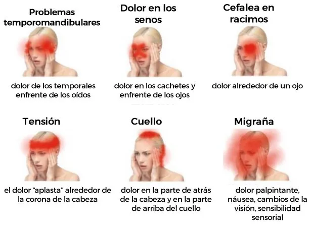

Dolor de Cabeza
Descripción: El dolor de cabeza es una molestia o dolor que se experimenta en cualquier parte de la cabeza o el cuello.
Causas
Puede ser causado por estrés, tensión muscular, migrañas o infecciones.
Síntomas
- Dolor sordo o agudo en la cabeza
- Sensibilidad a la luz
- Náuseas en algunos casos
Pruebas y Exámenes
El diagnóstico puede incluir una evaluación física, análisis de sangre, y en algunos casos, tomografías o resonancias.
Tratamiento
El tratamiento puede incluir analgésicos de venta libre, cambios en el estilo de vida, y tratamiento de cualquier causa subyacente.
Expectativas
La mayoría de los dolores de cabeza se resuelven con tratamiento, pero algunos pueden ser crónicos y requerir seguimiento médico.